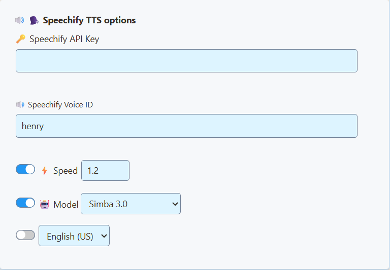

开始之前
先在 SSN 中连接聊天。如果尚未设置，请参照 入门指南.
您需要互联网连接和 Speechify API 账号和密钥。仅安装 Speechify 阅读应用不会将其连接到 SSN。请在 Speechify 账号中检查 API 访问权限和使用费用。选中朗读的聊天会发送到 Speechify。
1. 获取 Speechify API 密钥
- 打开 Speechify 开发者平台 并登录或创建账号。
- 打开 API 密钥。复制现有密钥，或按需创建新密钥。
- 准备好密钥以粘贴到 SSN。无需安装 SDK 或运行代码。
这些账号步骤依据 Speechify 官方快速入门.
请妥善保密密钥和生成的 SSN 链接。 链接可能包含 API 密钥。不要发到聊天中或包含在截图里。
2. 在 SSN 中选择 Speechify
- 打开桌面应用的 来源与设置，或 SSN 扩展弹出菜单。
- 找到 主聊天叠加层与控制停靠面板，然后展开 消息 — 文字转语音。您也可以在设置中搜索 text to speech.
- 开启 在停靠面板中启用 TTS.
- 设置 TTS 服务提供商 为 Speechify.
- 将密钥粘贴到 Speechify API 密钥。首次尝试英语声音时，输入
henry在 Speechify 声音 ID. - 首次测试时保留默认速度。保持可选的模型和语言开关关闭；SSN 默认使用 Simba 3.0。



3. 打开更新后的停靠面板链接
- 使用 复制链接 ，位于以下选项旁： 主聊天叠加层与控制停靠面板.
- 在希望播放朗读的浏览器中打开刚复制的链接。如果使用 OBS，请按照下一节 OBS 说明操作。
- 在普通浏览器中，如果音频被阻止，请在停靠面板内点击一次。
- 在自己已连接的聊天中发送短消息。确认新消息出现并被朗读。
保持来源连接和 TTS 停靠面板打开。符合条件的新消息会依次朗读；筛选器和 TTS 控件可能排除消息。繁忙聊天可能形成队列。
更改声音、速度或提供商后，再次复制链接。 在所有播放朗读的位置替换旧 URL。刷新仍使用旧 URL 的页面可能保留旧设置。
选择其他声音
更改 Speechify 声音 ID，然后打开更新后的停靠面板链接。Speechify 列出 henry, george, carly，以及 sabrina 作为内置示例。请使用准确的 API 声音 ID，不要仅使用阅读应用中的显示名称。
若要寻找更多声音，使用 Speechify 的 选择声音的说明。其声音列表 API 返回您的账号可用的声音；复制所选声音的 id 到 SSN。将声音与 SSN 设置支持的模型匹配。SSN 使用 Simba 3.0 作为默认值。对于英语，您可以打开模型开关并选择 Simba 3.2（英语）。保留选定的声音 ID；Henry 和 Carly 已使用当前模型测试。旧模型仍可供现有配置使用。
更改以下部分中的设置： 主聊天叠加层与控制停靠面板 ，如果该页面负责朗读聊天。精选聊天和聊天机器人有各自独立的 TTS 设置。
加快朗读速度
- 位于 Speechify TTS 选项，打开以下选项旁的开关： 速度.
- 试试 1.2 ，相比正常值略有提升；正常值为 1.0.
- 复制更新后的停靠面板链接，并替换浏览器或 OBS 来源中的 URL。用同一个短句比较两种设置。
必须打开开关，设置才会包含在链接中。使用 1.0 代表正常速度，较大数值加快朗读，较小数值减慢朗读。支持范围为 0.5 到 3.0.
朗读更快与更早开始朗读是两回事。 速度设置不会消除 Speechify 生成音频所需的时间。缩短消息和关闭用户名朗读有助于避免队列积压。
可选：通过 OBS 输出 Speechify 音频
- 在用于直播的场景中，前往 来源 → + → 浏览器。将来源命名为 SSN Speechify.
- 将更新后的 SSN 停靠面板链接粘贴到 URL.
- 勾选 通过 OBS 控制音频，然后点击 确定.
- 发送一条简短聊天消息，观察该来源的 混音器 电平表是否跳动。
- 录制一小段并回放，确认输出中包含声音。

若只需音频而不显示聊天，请保持浏览器来源运行，并将其放在可见画布之外。不要依赖隐藏时会关闭的来源继续朗读。
自己也想听到声音？ 打开 高级音频属性 ，从音频混音器打开，并设置该来源的 音频监听 为 监听并输出。避免使用 仅监听（输出静音） （需要让观众听到声音时）。避免再次捕获监听设备。
OBS 自定义停靠面板是控制面板。按照本说明操作时，请使用 场景中的浏览器来源。只保留一个副本发声，以免声音重复。
参考： OBS 浏览器来源文档.
提高观众听到的音量
- 在 SSN 停靠面板的 TTS 设置中，启用 朗读音量 并将其设为 1.0 （100%）。再次更新停靠面板 URL。如果调低了停靠面板自身的音量滑块，请调回较高音量。
- 在 OBS 中，取消静音 SSN Speechify 并将其混音器推子提高至接近 0.0 dB ，如果先前已调低。
- 如果仍然太小声，打开该音频来源的 滤镜，添加 增益 音频滤镜，并尝试小幅提升，例如 +3 dB.
- 将语音与麦克风、背景音频一起录制。回听并调整平衡。如果语音失真或电平表到达红色区域，请降低增益。
SSN 音量最高为 100%；额外增益应在输出混音中调整。仅调高耳机音量不会让直播更响。OBS 文档介绍了 此处的增益和其他音频滤镜.
使用其他直播应用？ 将 TTS 音频路由到该应用可捕获的输入。具体设置取决于操作系统和应用的音频控件。
如果出现问题
- 停靠面板中没有文字： 先修复来源捕获。Speechify 无法朗读 SSN 尚未收到的消息。
- 仍是旧声音： 确认您更改的是停靠面板设置，已选择 Speechify 并替换旧 URL。关闭或静音其他正在发声的副本。
- 收到文字却没有朗读： 检查 TTS 开关、API 密钥、账号访问权限／用量限制和声音 ID。在普通浏览器中，点击页面一次。
- 您能听到，但观众听不到： 检查 OBS 来源电平表、静音状态、输出音轨和监听模式。测试录制。
- 回声或重复朗读： 仅保留一个 TTS 页面发声，避免同时捕获其直接输出和监听音频。
- 速度或模型没有变化： 打开对应开关并复制更新后的链接。旧版 SSN 设置页面存在一个问题，可能将这些控件发送到错误的叠加层。重新加载设置以获取更新后的控件。
模型不可用？ 选择 Simba 3.0 或 Simba 3.2，并使用 Speechify 账号支持的声音。Speechify 正在停用旧版 English 和 Multilingual 模型；请参见其 当前模型参考.
寻求帮助时，请提供应用版本、声音 ID、失败步骤，以及音频运行于 SSApp、浏览器还是 OBS。请从截图中移除 API 密钥和私有会话链接。